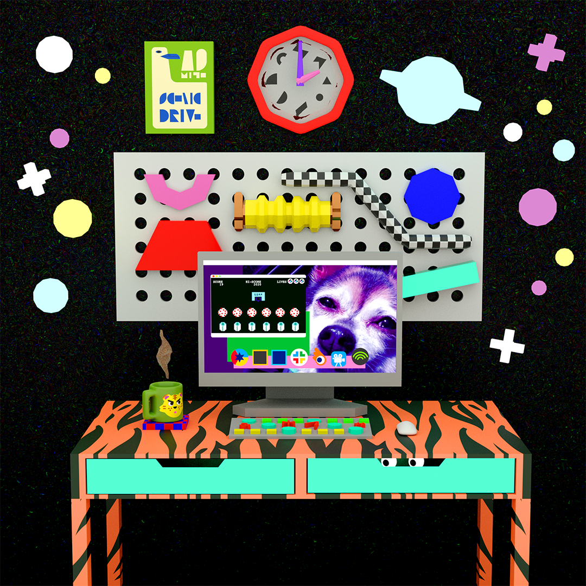

WFH 2020
Client: Personal Project
My Role: Designer, Animator, Textures, Storyboard
Visual Development
Asset: I created SARS-CoV-2 clouds to pass through the window.
Additional Work
Upon seeing this animation, Todd Oldham Studio requested to repost my work on their social media. I modeled this 3D still life of my New York room for their usage.